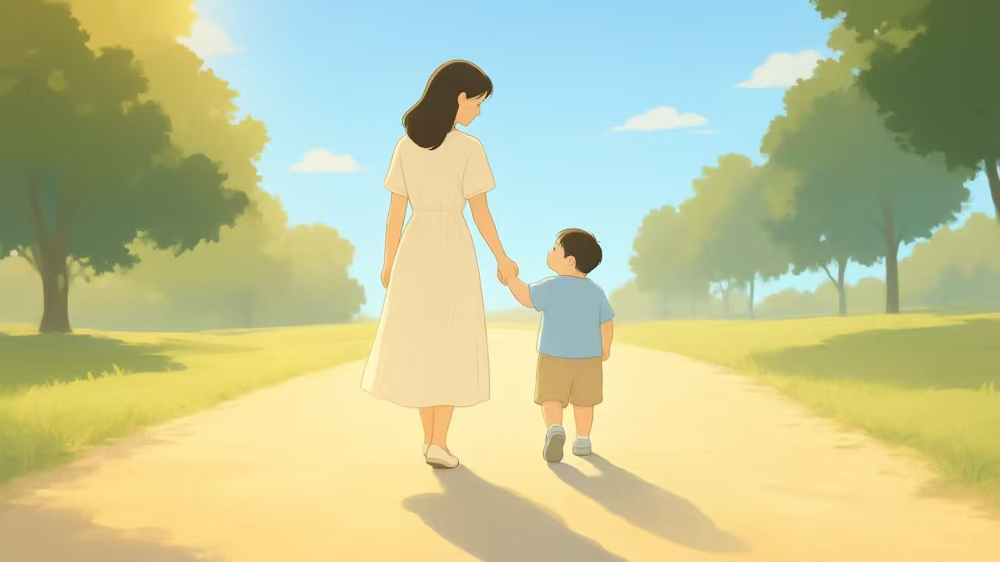

凌晨 3 点，林妈妈又醒了。她先侧过身，看了一眼婴儿床上的女儿——呼吸平稳，嘴角带着一点口水印。
女儿 2 岁，确诊唐氏综合征已经 19 个月。这样的夜晚，她已经数不清熬过多少个。
唐氏综合征不是遥远的概念。它落在每个家庭里，是产检单上的一个高风险提示，是康复教室里的一节课，是长大后一份难找的工作。以下四组数字，来自残联、卫健部门的公开统计——它们勾勒出这个群体从出生到成年的支持缺口。
按 1/800～1/600 的发生率推算，以 2024 年全国出生人口约 954 万人计，中国每年约有 1.2～1.6 万名唐氏综合征宝宝降生（推算值）——他们中的绝大多数，会落入"智力残疾"这一类别。
我国《残疾人残疾分类和分级》国家标准（GB/T 26341-2010）将残疾分为视力、听力、言语、肢体、智力、精神、多重七类；唐氏综合征以智力障碍为主要表现，通常被归入智力残疾，且常合并先天性心脏病等器质畸形，部分同时构成多重残疾。正因如此，本文以智力残疾／重度残疾人的公共统计数据，来映射这一群体所获得的筛查、康复、教育、就业与养老支持。
来源：《唐氏综合征防治健康教育核心信息》（国家卫健委／中国残联）；《中华人民共和国2024年国民经济和社会发展统计公报》（国家统计局）；《残疾人残疾分类和分级》GB/T 26341-2010
中国残联《残疾人事业发展统计公报》历年（2025年公报发布于2026年4月）；第二次全国残疾人抽样调查主要数据公报（2006年）；部分年份官方报告缺失交叉数据，以留空处理，保证客观准确。
它是什么、不是什么，决定了我们以什么姿态靠近这个群体。
先认识，再讨论。真相是建立情感连接的起点。
唐氏综合征（Down Syndrome）又称 21 三体综合征，是最常见的染色体非整倍体异常：人体细胞第 21 号染色体多出一条，共 47 条（正常为 46 条）。1959 年由勒琼（Lejeune）首次确认，是人类首个被确认的染色体疾病。
它可能带来智力发育迟缓、不同程度的学习障碍，并伴随部分先天性健康风险——约四成至一半患儿合并先天性心脏病等器质畸形，另有消化器官畸形、白血病风险升高等并发症；但每个人受影响的程度差异很大，很多唐氏儿童在早期干预与支持下，可以学习、生活、参与社会。
世界唐氏综合征日：3 月 21 日（321 对应 21 号染色体三体）。2026 年 3 月 21 日是第 15 个世界唐氏综合征日。
不是遗传病。超过 90% 为新生染色体异常，与父母基因、家庭行为无关，任何家庭都可能遇到。
不是"治不好就放弃"。唐氏无法"治愈"，但早期筛查、康复训练、融合教育能显著改善生活质量。
他们不是"长不大的孩子"。唐氏儿童会长大、会工作、会恋爱，越来越多成年人过着有尊严的独立生活。
表述以最新医学共识为准，发布前请核对。
出生—筛查—康复—教育—就业—养老。唐氏儿童的一生，被切成六段；每段的社会支持，冷暖不同。
把唐氏宝宝的一生切成六段：出生、筛查、康复、教育、就业、养老。每一段能查到的公开数据，越往后越稀疏——这不是错觉，而是支持体系真实的样子。
漏斗各层级来自不同年份、不同口径的公共统计，用于呈现支持强度的整体衰减趋势，非同一队列的追踪数据。
孕早期血清学筛查、孕中期血清学筛查与无创 DNA 检测（NIPT）分别在孕 9–22.86 周覆盖不同阶段；点击色带查看详情。筛查不等于确诊，高风险孕妇需无创 DNA 或羊膜穿刺确诊。
2025年，60岁以下参保残疾人中 708.3 万重度残疾人获参保缴费资助，另有 273.6 万非重度残疾人同样受益。数据为最新公报口径，不再跨年份堆叠对比（历年口径不同，跨年对比会失真）。
托养机构数由 2020 年的 8370 个增至 2025 年的 11210 个（2021 年统计口径调整，未列入）；2025 年接受寄宿制与日间照料机构托养 22.9 万人、居家服务 52.4 万人。
被忽视的少数：多重残疾儿童（如唐氏合并先天心脏病）受教育权最薄弱，入学率不足半数（40.99%）；四类合计约 175 万人。唐氏患儿中约四成至一半合并先天性心脏病等器质畸形，因此不少同时被认定为多重残疾——这恰恰是他们受教育权与就业支持最薄弱的原因。
从游泳赛场到川剧舞台，再到特奥领奖台——他们用日复一日的坚持，改写了医学的"预判"。
数据勾勒规模，故事照见个体。以下三位唐氏青年与他们的家庭，来自公开报道的真实案例。

6 个月大时确诊唐氏综合征。17 岁拜师学习川剧变脸——一个动作反复练上百遍，凌晨早起爬山练气息。经过一年半训练，她首次登台，最多可变换 13 张脸谱，还学会川剧吐火。
她多次登上大型晚会与央视舞台，被称为国内唐氏川剧变脸第一人。
来源：四川观察等公开报道
她证明了哪一环：职业培训与艺术就业类——"就业环节虽无数据，但有活证据"。

出生时医生曾预判她大概率终身瘫痪。14 岁那年她看到游泳，眼里有了光；游泳馆不敢收，58 岁的母亲就自学游泳动作，再手把手一遍遍教她。别人学十遍的动作，她练上千遍。
2022 年，她站上四川省残运会赛场夺得游泳金牌；2026 年省残运会再斩获五枚银牌。
来源：公开媒体报道
她证明了哪一环：教育与体育参与类——"教育融入可行"，训练机会就是被看见的入场券。

幼时确诊，发育迟缓、肢体协调困难。受奥运冠军李小鹏探访鼓舞，他立志站上体操赛场。同一动作成千上万次重复，手掌磨破结痂是常态。
2015 年，11 岁的他在洛杉矶世界夏季特奥会拿下体操 1 金 2 银 2 铜；2019 年阿布扎比再夺 2 金 4 银 1 铜，并把心愿纸条送给了偶像李小鹏。
来源：公开媒体报道
他证明了哪一环：教育与体育参与类——融合教育与专业训练，能让潜能真正兑现。
政策、公益组织与社会企业，正在试图补上那些缺口。
困境从来不是一夜形成的，改变也一样。以下三个层面的力量，正在让"看见"变成"支持"。
国家卫生健康委员会妇幼健康司持续开展唐氏综合征防治宣传：孕早期血清学筛查（孕 9–13.86 周）、孕中期筛查（孕 15–20.86 周）、无创 DNA 检测（孕 12–22.86 周）构成三道产前防线；2023 年全国产前筛查率已达 91.3%。残疾儿童康复救助制度为 0–6 岁儿童提供补贴，2024 年约 7.45 万名 0–6 岁残疾儿童获康复救助。
修复第 2 章哪一环：筛查与早期康复（漏斗第②③级）各地唐氏家长组织提供信息支持、康复经验、政策倡导与心理互助。在短视频平台，"一群快乐的宝（梦工坊咖啡吧）"等账号记录心智障碍青年的工作日常，获赞 28 万、粉丝 2 万，让更多人直观看到"他们能工作、爱工作"。
修复第 2 章哪一环：教育与社会支持（随班就读、融合）上海浦东的梦工坊咖啡吧，专门为心智障碍青年提供咖啡师等岗位——他们快乐、乐观、向上，渴望用劳动证明自己。2024 年，全国持证残疾人就业 914.35 万，但辅助性就业岗位仅 16.47 万个——有场所、缺岗位，正是就业环节的真实矛盾；支持性就业与托养网络正在生长。
修复第 2 章哪一环：就业（支持性就业岗位，漏斗第⑤级）
国家卫生健康委员会妇幼健康司、中国红十字基金会爱婴医院发展基金共同发布，"重视唐氏筛查，孕育健康宝宝"。

上海浦东齐河路 508 号，一群心智障碍青年在这里做咖啡、迎客人，用劳动赢得尊重。

康复救助制度为 0–6 岁儿童提供补贴，托养服务持续扩容——"黄金窗口"正从口号变为现实。
从认识到行动，每个人都能成为微光的一部分。四条建议，各挂一句数据依据。
勾选你愿意做的（演示交互，勾选状态不保存）
留言区、网友情绪词云、公益科普小贴士与数据来源。
方法学注脚：词云词语为占位归纳（示例），字号反映出现频次；正式发布前请基于上述口径的真实评论样本重新生成。
你身边有唐氏儿童或家庭吗？你有什么想说的？
演示版：留言仅在本地模拟，不会真正存储。
全部数据访问核对日期：2026-10-11／2026-10-12。推算值（每年新增唐氏宝宝数）为本文自算，非官方统计；"待核"项请在发布前回到公报原文确认。
每一个 1/700 的背后，都有一个完整而具体的家庭。数据让我们看见规模，故事让我们看见人。
如果你读到了这里，请记住：他们不需要同情，需要的是机会与陪伴。
